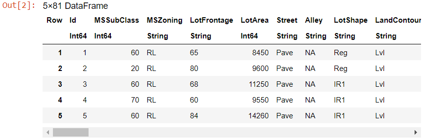
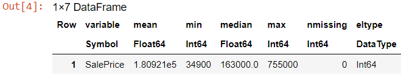
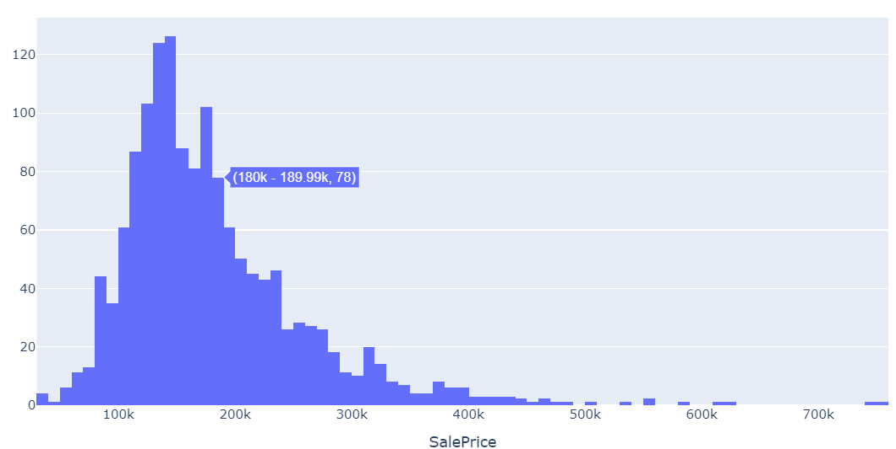
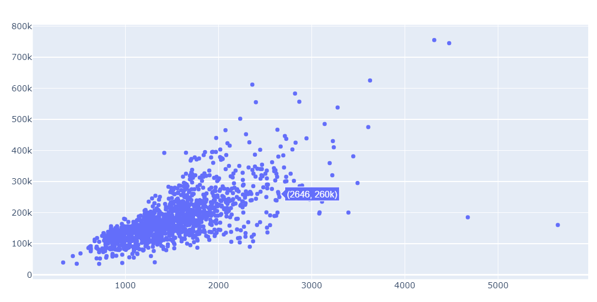
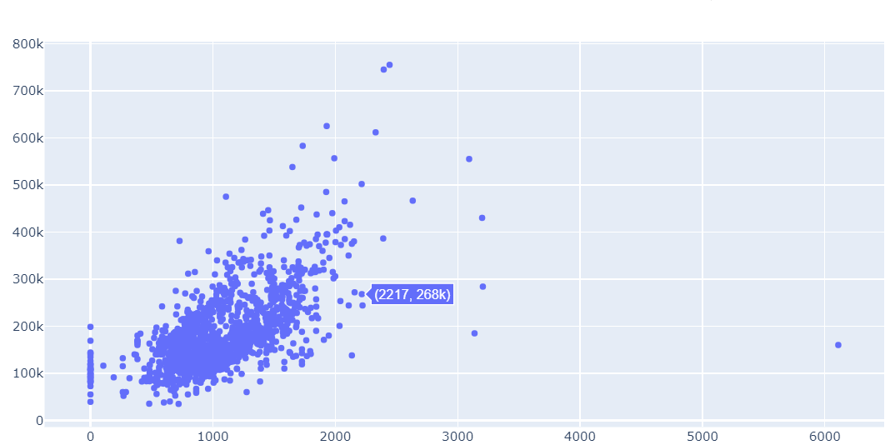
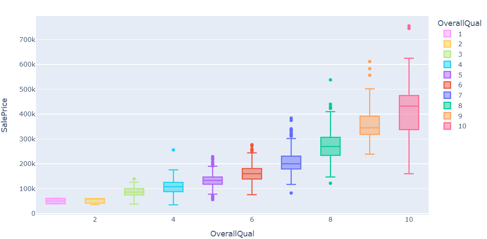
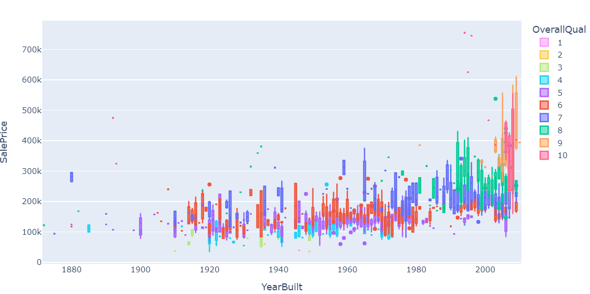
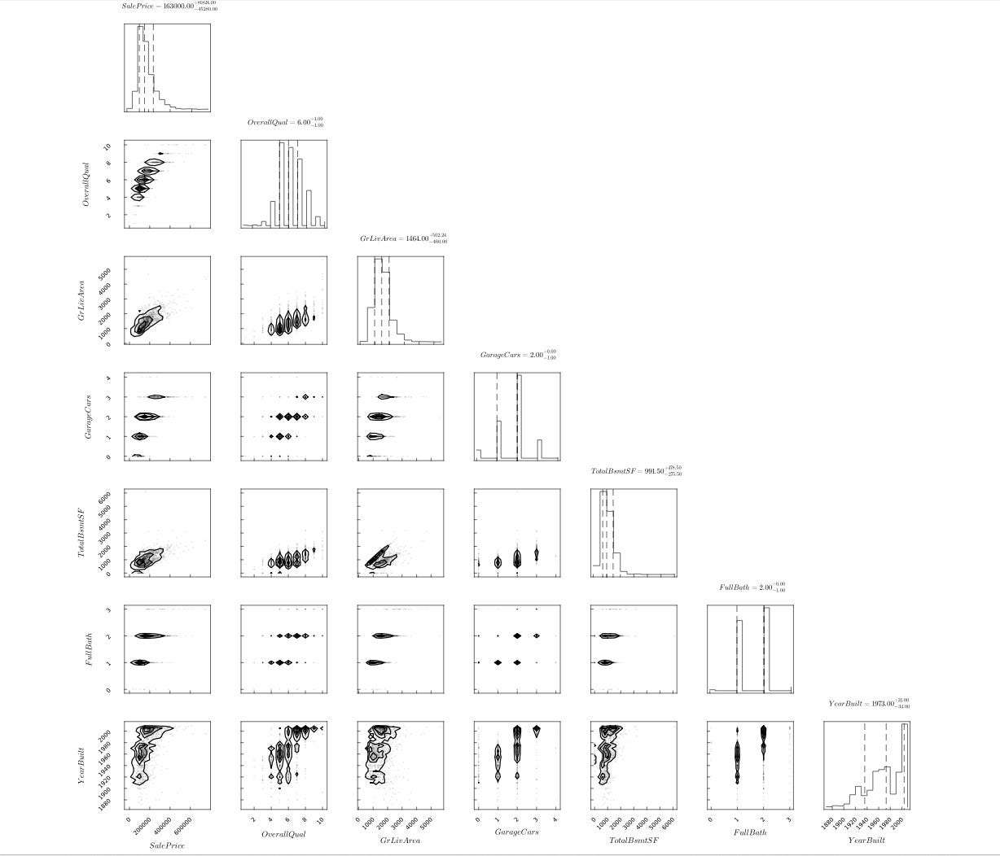

Source : Analytics India MagazineIn this tutorial, we’ll learn using Julia for exploratory data analysis. This is my first blog post ever and first article of my series Julia For The Win. Please feel free to give feedback ! Let’s get started. In this tutorial we’ll be reproducing Comprehensive data exploration with Python notebook, but in Julia.
Dataset used in this tutorial can be found here.
We’ll be using following packages:
- PlotlyJS.jl : A Julia interface to Plotly.js
- JuliaPlots/Plots.jl
- PairPlots.jl
- CSV.jl
- JuliaStats/StatsBase.jl
Above packages can be installed by using the following block of code (we take PlotlyJS for example)
using Pkg;
Pkg.add("PlotlyJS");The most difficult thing in life is to know yourself
This quote belongs to Thales of Miletus. Thales was a Greek/Phonecian philosopher, mathematician and astronomer, which is recognised as the first individual in Western civilisation known to have entertained and engaged in scientific thought (source: https://en.wikipedia.org/wiki/Thales)
I wouldn’t say that knowing your data is the most difficult thing in data science, but it is time-consuming. Therefore, it’s easy to overlook this initial step and jump too soon into the water.
So I tried to learn how to swim before jumping into the water. Based on Hair et al. (2013), chapter ‘Examining your data’, I did my best to follow a comprehensive, but not exhaustive, analysis of the data. I’m far from reporting a rigorous study in this kernel, but I hope that it can be useful for the community, so I’m sharing how I applied some of those data analysis principles to this problem.
Despite the strange names I gave to the chapters, what we are doing in this kernel is something like:
- Understand the problem. We’ll look at each variable and do a philosophical analysis about their meaning and importance for this problem.
- Univariable study. We’ll just focus on the dependent variable (‘SalePrice’) and try to know a little bit more about it.
- Multivariate study. We’ll try to understand how the dependent variable and independent variables relate.
- Basic cleaning. We’ll clean the dataset and handle the missing data, outliers and categorical variables.
- Test assumptions. We’ll check if our data meets the assumptions required by most multivariate techniques.
Now, it’s time to have fun!
DataFrames.jl is the stable alternative of Pandas in Julia. Its design and functionality are similar to those of pandas (in Python) and data.frame, data.table and dplyr (in R), making it a great general purpose data science tool.
using CSV
using DataFrames
df_train = CSV.read("./train.csv", DataFrame, stringtype=String);To peek into the dataframe, Julia alternative of head() method is first
first(df_train, 5)
# displays first 5 value of dataframe
So… What can we expect?
In order to understand our data, we can look at each variable and try to understand their meaning and relevance to this problem. I know this is time-consuming, but it will give us the flavour of our dataset.
In order to have some discipline in our analysis, we can create an Excel spreadsheet with the following columns:
- Variable - Variable name.
- Type - Identification of the variables’ type. There are two possible values for this field: ‘numerical’ or ‘categorical’. By ‘numerical’ we mean variables for which the values are numbers, and by ‘categorical’ we mean variables for which the values are categories.
- Segment - Identification of the variables’ segment. We can define three possible segments building, space or location. When we say ‘building’, we mean a variable that relates to the physical characteristics of the building (e.g. ‘OverallQual’). When we say ‘space’, we mean a variable that reports space properties of the house (e.g. ‘TotalBsmtSF’). Finally, when we say a ‘location’, we mean a variable that gives information about the place where the house is located (e.g. ‘Neighborhood’).
- Expectation - Our expectation about the variable influence in ‘SalePrice’. We can use a categorical scale with ‘High’, ‘Medium’ and ‘Low’ as possible values.
- Conclusion - Our conclusions about the importance of the variable, after we give a quick look at the data. We can keep with the same categorical scale as in ‘Expectation’.
- Comments - Any general comments that occured to us.
While ‘Type’ and ‘Segment’ is just for possible future reference, the column ‘Expectation’ is important because it will help us develop a ‘sixth sense’. To fill this column, we should read the description of all the variables and, one by one, ask ourselves:
- Do we think about this variable when we are buying a house? (e.g. When we think about the house of our dreams, do we care about its ‘Masonry veneer type’?).
- If so, how important would this variable be? (e.g. What is the impact of having ‘Excellent’ material on the exterior instead of ‘Poor’? And of having ‘Excellent’ instead of ‘Good’?).
- Is this information already described in any other variable? (e.g. If ‘LandContour’ gives the flatness of the property, do we really need to know the ‘LandSlope’?).
After this daunting exercise, we can filter the spreadsheet and look carefully to the variables with ‘High’ ‘Expectation’. Then, we can rush into some scatter plots between those variables and ‘SalePrice’, filling in the ‘Conclusion’ column which is just the correction of our expectations.
I went through this process and concluded that the following variables can play an important role in this problem:
- OverallQual (which is a variable that I don’t like because I don’t know how it was computed; a funny exercise would be to predict ‘OverallQual’ using all the other variables available).
- YearBuilt.
- TotalBsmtSF.
- GrLivArea.
I ended up with two ‘building’ variables (‘OverallQual’ and ‘YearBuilt’) and two ‘space’ variables (‘TotalBsmtSF’ and ‘GrLivArea’). This might be a little bit unexpected as it goes against the real estate mantra that all that matters is ‘location, location and location’. It is possible that this quick data examination process was a bit harsh for categorical variables. For example, I expected the ‘Neigborhood’ variable to be more relevant, but after the data examination I ended up excluding it. Maybe this is related to the use of scatter plots instead of boxplots, which are more suitable for categorical variables visualization. The way we visualize data often influences our conclusions.
However, the main point of this exercise was to think a little about our data and expectactions, so I think we achieved our goal. Now it’s time for ‘a little less conversation, a little more action please’. Let’s shake it!
Analysing SalePrice
‘SalePrice’ is the reason of our quest. It’s like when we’re going to a party. We always have a reason to be there. Usually, women are that reason. (disclaimer: adapt it to men, dancing or alcohol, according to your preferences)
Using the women analogy, let’s build a little story, the story of ‘How we met ’SalePrice’.
Everything started in our Kaggle party, when we were looking for a dance partner. After a while searching in the dance floor, we saw a girl, near the bar, using dance shoes. That’s a sign that she’s there to dance. We spend much time doing predictive modelling and participating in analytics competitions, so talking with girls is not one of our super powers. Even so, we gave it a try:
‘Hi, I’m Kaggly! And you? ’SalePrice’? What a beautiful name! You know ‘SalePrice’, could you give me some data about you? I just developed a model to calculate the probability of a successful relationship between two people. I’d like to apply it to us!’
describe(df_train, cols=:SalePrice)
Very well… It seems that your minimum price is larger than zero. Excellent! You don’t have one of those personal traits that would destroy my model! Do you have any picture that you can send me? I don’t know… like, you in the beach… or maybe a selfie in the gym?
plot(df_train, x=:SalePrice, kind="histogram")
Ah! I see you that you use seaborn makeup when you’re going out… That’s so elegant! I also see that you:
- Deviate from the normal distribution
- Have appreciable positive skewness
- Show peakedness
This is getting interesting! ‘SalePrice’, could you give me your body measures?
using StatsBase
skw, kurt = skewness(collect(df_train.SalePrice)), kurtosis(collect(df_train.SalePrice))
println("Skewness: $skw \nKurtosis: $kurt")This prints:
Skewness: 1.8809407460340335
Kurtosis: 6.509812011089398Amazing! If my love calculator is correct, our success probability is 97.834657%. I think we should meet again! Please, keep my number and give me a call if you’re free next Friday. See you in a while, crocodile!
‘SalePrice’, her buddies and her interests
It is military wisdom to choose the terrain where you will fight. As soon as ‘SalePrice’ walked away, we went to Facebook. Yes, now this is getting serious. Notice that this is not stalking. It’s just an intense research of an individual, if you know what I mean.
According to her profile, we have some common friends. Besides Chuck Norris, we both know ‘GrLivArea’ and ‘TotalBsmtSF’. Moreover, we also have common interests such as ‘OverallQual’ and ‘YearBuilt’. This looks promising!
To take the most out of our research, we will start by looking carefully at the profiles of our common friends and later we will focus on our common interests. Relationship with numerical variables
plot(scatter(df_train, x=:GrLivArea, y=:SalePrice, mode="markers"))
Hmmm… It seems that ‘SalePrice’ and ‘GrLivArea’ are really old friends, with a linear relationship.
And what about ‘TotalBsmtSF’?
plot(scatter(df_train, x=:TotalBsmtSF, y=:SalePrice, mode="markers"))
‘TotalBsmtSF’ is also a great friend of ‘SalePrice’ but this seems a much more emotional relationship! Everything is ok and suddenly, in a strong linear (exponential?) reaction, everything changes. Moreover, it’s clear that sometimes ‘TotalBsmtSF’ closes in itself and gives zero credit to ‘SalePrice’.
Relationship with categorical features
plot(df_train, x=:OverallQual, y=:SalePrice, color=:OverallQual, kind="box")
Like all the pretty girls, ‘SalePrice’ enjoys ‘OverallQual’. Note to self: consider whether McDonald’s is suitable for the first date.
plot(df_train, x=:YearBuilt, y=:SalePrice, color=:OverallQual, kind="box")
Although it’s not a strong tendency, I’d say that ‘SalePrice’ is more prone to spend more money in new stuff than in old relics.
Note: we don’t know if ‘SalePrice’ is in constant prices. Constant prices try to remove the effect of inflation. If ‘SalePrice’ is not in constant prices, it should be, so than prices are comparable over the years.
In summary
Stories aside, we can conclude that: - ‘GrLivArea’ and ‘TotalBsmtSF’ seem to be linearly related with ‘SalePrice’. Both relationships are positive, which means that as one variable increases, the other also increases. In the case of ‘TotalBsmtSF’, we can see that the slope of the linear relationship is particularly high. - ‘OverallQual’ and ‘YearBuilt’ also seem to be related with ‘SalePrice’. The relationship seems to be stronger in the case of ‘OverallQual’, where the box plot shows how sales prices increase with the overall quality.
We just analysed four variables, but there are many other that we should analyse. The trick here seems to be the choice of the right features (feature selection) and not the definition of complex relationships between them (feature engineering).
That said, let’s separate the wheat from the chaff.
As an engineer, I don’t feel comfortable with this approach. All my education was about developing a disciplined mind, able to withstand the winds of subjectivity. There’s a reason for that. Try to be subjective in structural engineering and you will see physics making things fall down. It can hurt.
So, let’s overcome inertia and do a more objective analysis.
The ‘plasma soup’
‘In the very beginning there was nothing except for a plasma soup. What is known of these brief moments in time, at the start of our study of cosmology, is largely conjectural. However, science has devised some sketch of what probably happened, based on what is known about the universe today.’ (source: http://umich.edu/~gs265/bigbang.htm)
To explore the universe, we will start with some practical recipes to make sense of our ‘plasma soup’:
- Correlation matrix (heatmap style).
- ‘SalePrice’ correlation matrix (zoomed heatmap style).
- Scatter plots between the most correlated variables (move like Jagger style).
For heatmaps, I found JuliaPlots to be more userfriendly than PlotlyJS.jl
import Plots.heatmap as ht
# alias because Plotly namescope conflicts with Plots.jl
using Statistics: cor
# correlation matrix
avoid = names(df_train, String)
# avoiding columns with string values : raises error
df_non_str = select(df_train, Not(avoid));
co = cor(Matrix(df_non_str));
not_avoid = names(df_train, Not(avoid));
ht(co, xticks=(1:35, not_avoid), yticks=(1:35, not_avoid),
aspect_ratio=:equal, fill_z=co, xrotation=90, xtickfontsize=5,
ytickfontsize=5)
According to our crystal ball, these are the variables most correlated with ‘SalePrice’. My thoughts on this:
- ‘OverallQual’, ‘GrLivArea’ and ‘TotalBsmtSF’ are strongly correlated with ‘SalePrice’. Check!
- ‘GarageCars’ and ‘GarageArea’ are also some of the most strongly correlated variables. However, as we discussed in the last sub-point, the number of cars that fit into the garage is a consequence of the garage area. ‘GarageCars’ and ‘GarageArea’ are like twin brothers. You’ll never be able to distinguish them. Therefore, we just need one of these variables in our analysis (we can keep ‘GarageCars’ since its correlation with ‘SalePrice’ is higher).
- ‘TotalBsmtSF’ and ‘1stFloor’ also seem to be twin brothers. We can keep ‘TotalBsmtSF’ just to say that our first guess was right (re-read ‘So… What can we expect?’).
- ‘FullBath’?? Really?
- ‘TotRmsAbvGrd’ and ‘GrLivArea’, twin brothers again. Is this dataset from Chernobyl?
- Ah… ‘YearBuilt’… It seems that ‘YearBuilt’ is slightly correlated with ‘SalePrice’. Honestly, it scares me to think about ‘YearBuilt’ because I start feeling that we should do a little bit of time-series analysis to get this right. I’ll leave this as a homework for you.
Let’s proceed to the pair plots.
Pair plots between ‘SalePrice’ and correlated variables (move like Jagger style)
corner(df_train[:, cols])
Although we already know some of the main figures, this mega scatter plot gives us a reasonable idea about variables relationships.
One of the figures we may find interesting is the one between ‘TotalBsmtSF’ and ‘GrLiveArea’. In this figure we can see the dots drawing a linear line, which almost acts like a border. It totally makes sense that the majority of the dots stay below that line. Basement areas can be equal to the above ground living area, but it is not expected a basement area bigger than the above ground living area (unless you’re trying to buy a bunker).
The plot concerning ‘SalePrice’ and ‘YearBuilt’ can also make us think. In the bottom of the ‘dots cloud’, we see what almost appears to be a shy exponential function (be creative). We can also see this same tendency in the upper limit of the ‘dots cloud’ (be even more creative). Also, notice how the set of dots regarding the last years tend to stay above this limit (I just wanted to say that prices are increasing faster now).
Pheww ! That’s it for today. Today we took a look at how cool Julia is and why can it rescue data scientists just in case Python disappears from this earth !